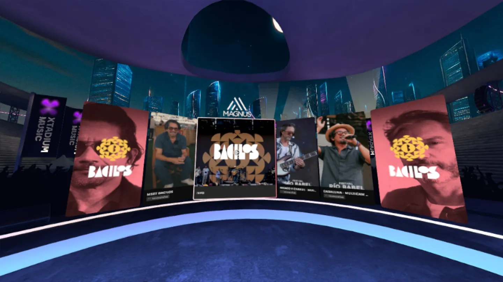
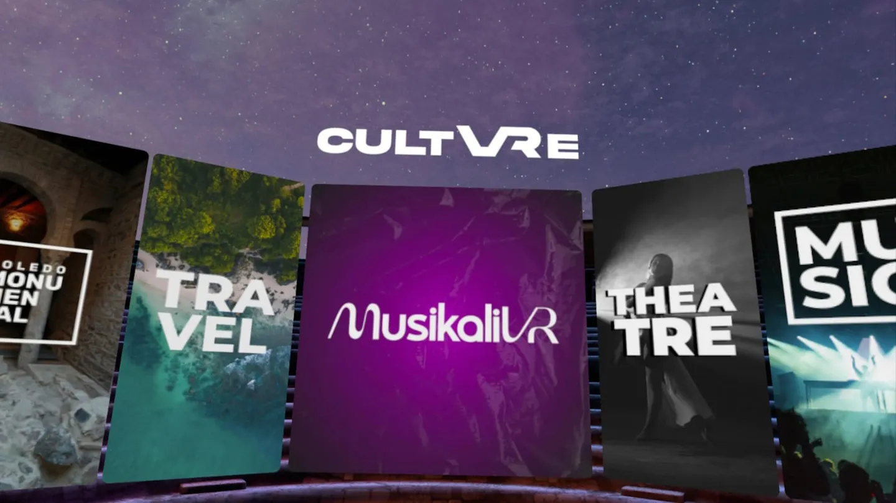
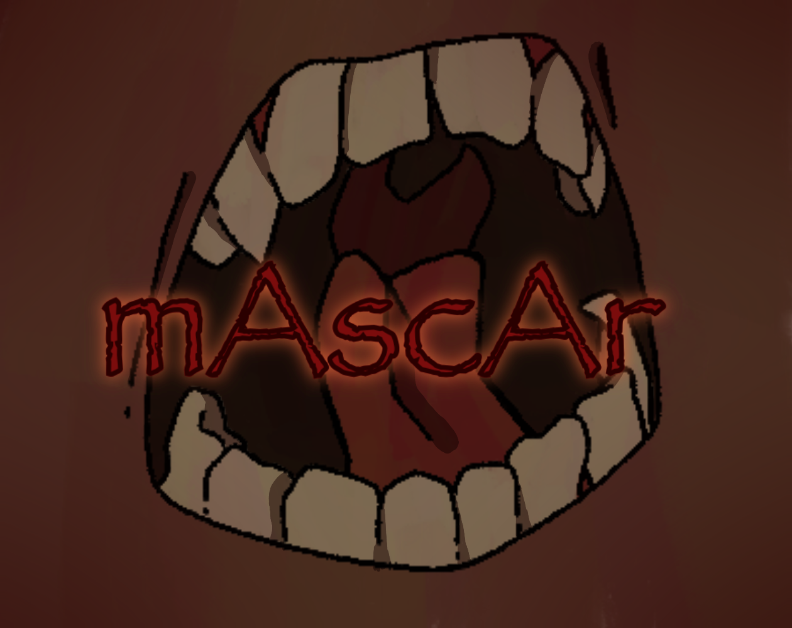
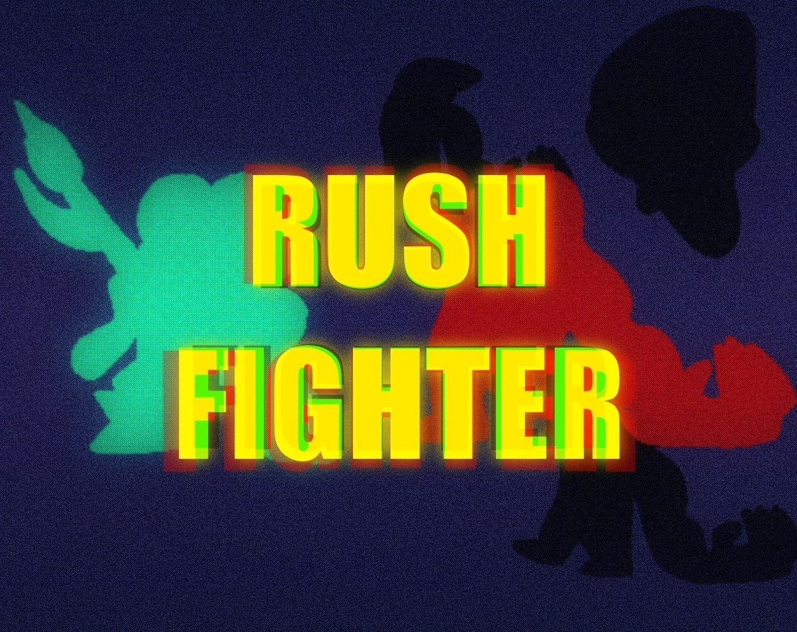
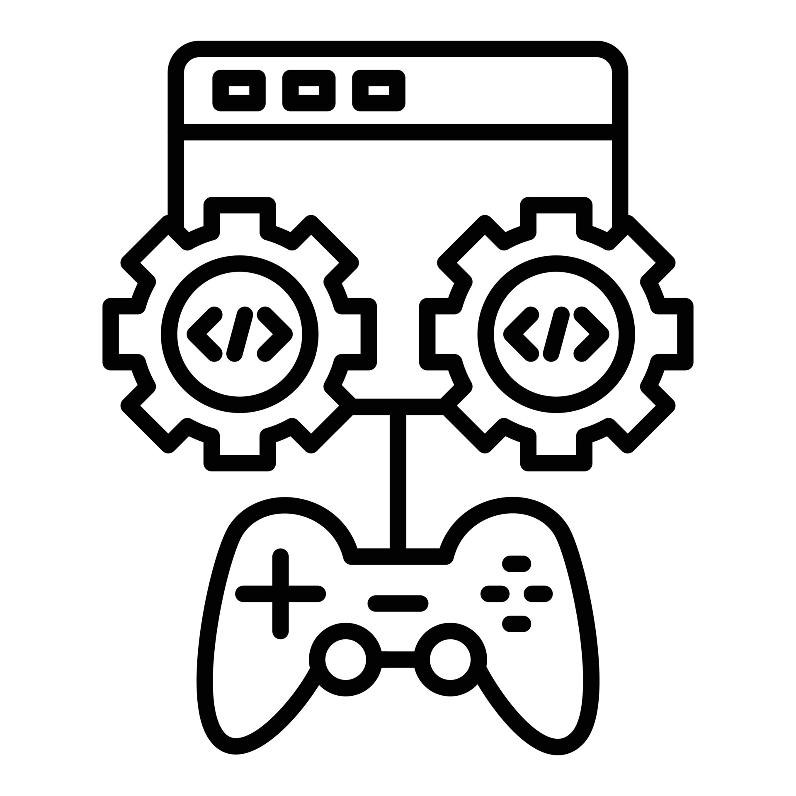
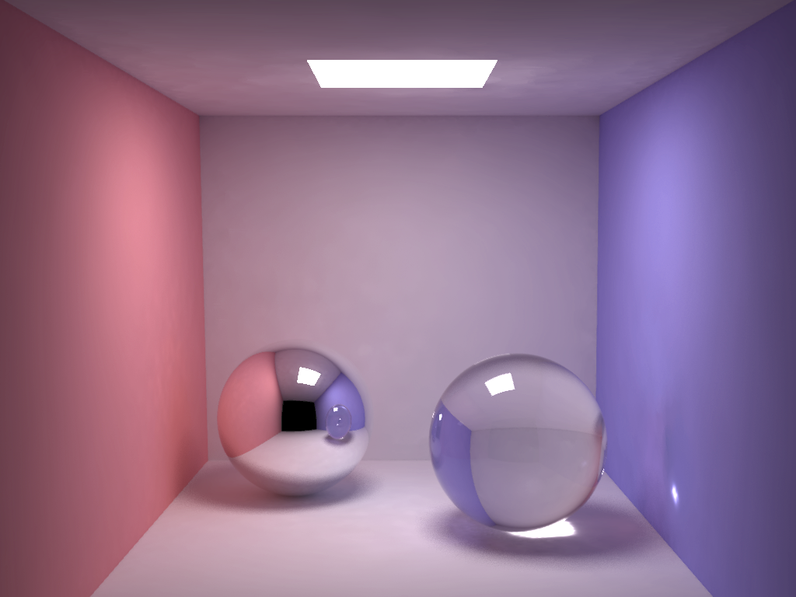
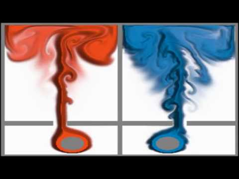
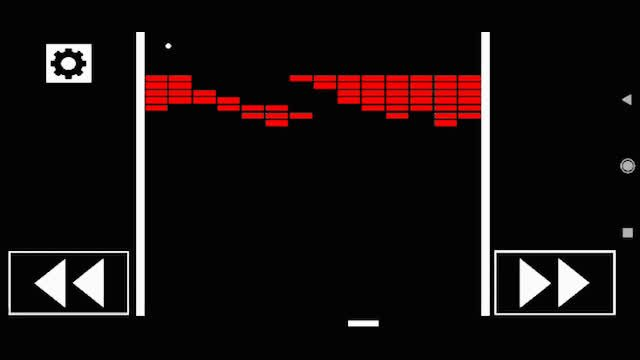
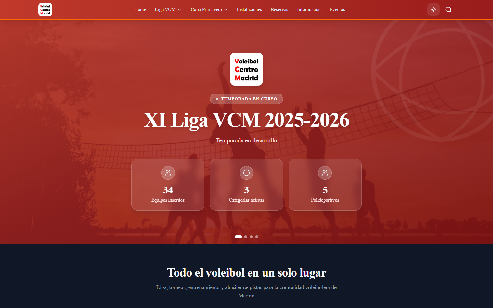
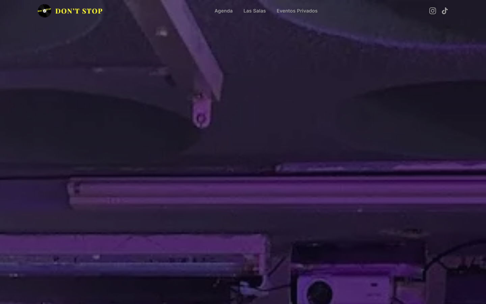

GAME DESIGN & GAMEPLAY · UNITY / XR — MADRID, ES
Everything on this page is something you can open right now. Five games in your browser, three apps free on the Meta Store, and the repositories behind the rest.
Studio work
YBVR · LURTIS AI · ISOSTOPY — BUILT WITH TEAMS, FOR REAL USERS
YBVR · THREE APPS ON THE META STORE · ALL FREE · ALL FROM ONE CODEBASE
Xtadium


XTADIUM MUSIC · CULTVRE — THE TWO SPIN-OFFS
NASCAR 3D TABLETOP — INTERNAL R&D
If you have a headset, this is the part of my work you can actually stand inside. Xtadium is Meta's featured immersive sports app — live NBA, UFC, NASCAR and EuroLeague in 8K 180°/360°, multi-camera, watch parties. I work on it full-time, and I own its spatial UI, notifications, onboarding, localization and the spin-off architecture the other two apps ship on.
Kumal ↗
2023–2024 · LURTIS AI · UNITY EDITOR TOOL
A Unity tool for creating and co-designing 3D scenarios, from single rooms to whole worlds, meant to buy design time back for narrative and gameplay. Publicly funded R&D. I worked on the tool itself, not just as its user.
Open the site →Truck Pre-Trip Inspection ↗
2020 · ISOSTOPY · INTERNSHIP · VR / AR
Truck-inspection simulator for a North American training company, preparing drivers for the US CDL certification: the full routine, with evaluation and feedback after each session. Built entirely in Unity.
See the project →ZPLN ↗
LURTIS AI · PUBLISHED ON GOOGLE PLAY
Space pinball-shooter. Programmed, tested and optimised its mechanics and environments, plus an Angular/TypeScript/Firebase management dashboard and an early multiplayer mode.
↓ Get it on PlayThe games
FIVE RUN IN THIS BROWSER · TWO ARE A DOWNLOAD · ONE ONLY EXISTS ON VIDEO
🏆 2ND OVERALL OF 55 — UNITY JAM 2024 · CASH PRIZES
Point of No Return
The universe expands around you and outrunning it is the whole game. Built in 5 days, judged by other developers: 2nd in theme interpretation, 4th in game mechanics.
▶ Play it
🏆 4TH GAMEPLAY · 8TH ORIGINALITY — OF 78
The Precise Hero
A precision platformer about a hero who keeps falling asleep. The itch page still keeps a speedrun leaderboard with real player times — beat one.
▶ Play it
G!RO
🏆 MOST ENJOYABLE GAME — FUN&SERIOUS BILBAO 2022
Audience award at a national industry festival, nominated Best Retro Game. One button, a ship that never stops rotating.
↓ Download (Windows)Feather Fallout
TOWER DEFENSE · TWO COLOURS ON SCREEN
DPS, effectiveness values and per-round budgets written as a design document before a line of code.
▶ Play itGravity Down Quick ↗
FPS PLATFORMER · SHOOT TO FLIP GRAVITY
You gain speed and change the direction of gravity by shooting. Made with one artist.
↓ Download
mAscAr ↗2026 · MÁLAGAJAM 20 · GODOT
Narrative horror, advanced one key at a time. Same four-person team as Rush Fighter.
▶ Play on itch
Rush Fighter2026 · JAÉNJAM II · GODOT 4 + C#
Beat 'em up built on parry timing — shipped to the web in C#, which Godot 4 does not officially support.
▶ Play itFADE ↗
🏆 3RD PRIZE — HACKATHON TELEFÓNICA 2019, SERIOUS GAMES
Serious game about Alzheimer's, built in 48 hours. One of two programmers in a team of five. No build was ever published — the video is what's left of it.
▶ Watch itMiscellaneous
LOW-LEVEL CODE · PROTOTYPES · 3D ART · WEB




C++ · OPENGL · GLSL — NO ENGINE UNDERNEATH
Down to the metal
A game engine written from scratch — renderer, physics integration and scene handling. A pathtracer with light transport implemented by hand: the theory behind every frame an engine gives you for free. A real-time fluid simulation. Breakout written natively in C++ on Android. This is the same shader instinct I now apply in HLSL on Quest.
Gameplay prototypes
EIGHT OF THEM · UNITY · C# · UNREAL
Mechanics built to find out whether they work: RTS command, 4X map navigation, mobile shooting, kiting and climbing, physics platforming, audio reaction, unit farming.
See them moving →


MODELLING & TEXTURING · FOUR PIECES
Enough to build my own game ideas without waiting on an artist — not a claim to be one.
See the pieces →


Web prototypes
MY OWN PROTOTYPES — NOT CLIENT WORK
A league platform for 34 teams and an events agenda for two music venues, both for people I know. Pitched, never contracted, never in production. AI-built, with me as engineer and functional definition.
Everything else →
The complete index: 40+ projects from 2016 to today. Gameplay prototypes, 3D art, engine and graphics work, Unity tooling, web prototypes, algorithm studies and every jam entry — including the ones that didn't place.